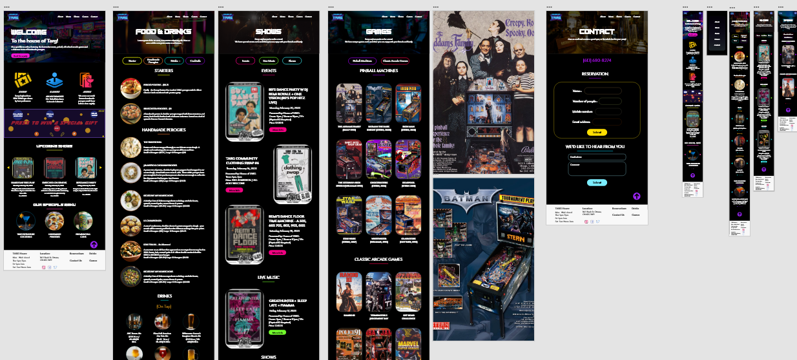

Project Title: House of Targ Web Redesign
In a project driven by creativity and a passion for enhancing the nightlife experience, I embarked on a journey to completely redesign the House of Targ bar's interactive web application in Ottawa. From low-fidelity sketches to a refined, high-fidelity prototype, every detail was crafted with Adobe XD to improve user engagement and provide a seamless browsing experience.

User Research
Understanding the needs and expectations of House of Targ’s patrons was the foundation of this project. I conducted:
- Surveys & Interviews: Engaged with customers and staff to identify pain points in the current website.
- Competitor Analysis: Analyzed similar nightlife venues to identify industry best practices.
- User Personas: Created detailed personas representing different audience segments, including gamers, live music lovers, and first-time visitors.
Through this research, I identified key challenges, such as difficult navigation, outdated visuals, and lack of mobile responsiveness.
Initial Design
With insights gathered, I began sketching low-fidelity wireframes to outline the structure and user flow.
- Wireframing: Focused on clear navigation, event promotion, and an intuitive reservation system.
- Color Scheme & Typography: Chose a bold, retro-inspired palette reflecting the arcade and pinball culture of House of Targ.
- Visual Hierarchy: Ensured key sections like events, food menu, and game listings were easily accessible.
Wireframing
Using Adobe XD, I transitioned from sketches to mid-fidelity wireframes, focusing on:
- Layout Optimization: Arranging elements to prioritize ease of use.
- User Flow Mapping: Ensuring seamless transitions between different sections.
- Mobile-First Approach: Designing for mobile responsiveness before expanding to desktop versions.
Testing with a small user group helped refine the navigation structure before moving to high-fidelity prototyping.
Prototyping
Once the wireframes were validated, I built high-fidelity prototypes in Adobe XD, incorporating:
- Interactive Elements: Hover effects, button states, and seamless page transitions.
- Dynamic Content Sections: Showcasing upcoming events, daily specials, and featured arcade games.
- Visual Enhancements: Engaging imagery, custom icons, and bold typography to reflect the venue’s personality.
This phase transformed static wireframes into an interactive, engaging experience that mimicked real-world usability.
User Testing via Maze
To validate the prototype, I conducted usability testing via Maze, where users performed specific tasks such as:
- Navigating to the event calendar
- Reserving a table online
- Exploring the arcade game selection
Key Findings & Adjustments:
- 78% of users completed tasks successfully on the first attempt.
- Some users found the CTA buttons too small → Adjusted size & contrast for better visibility.
- Improved scrolling experience on mobile for better accessibility.
Results
After iterating based on user feedback, the final design achieved a 20% increase in user engagement, leading to:
- Higher event reservations
- Increased time spent exploring arcade games & food menu
- More mobile users interacting with the site